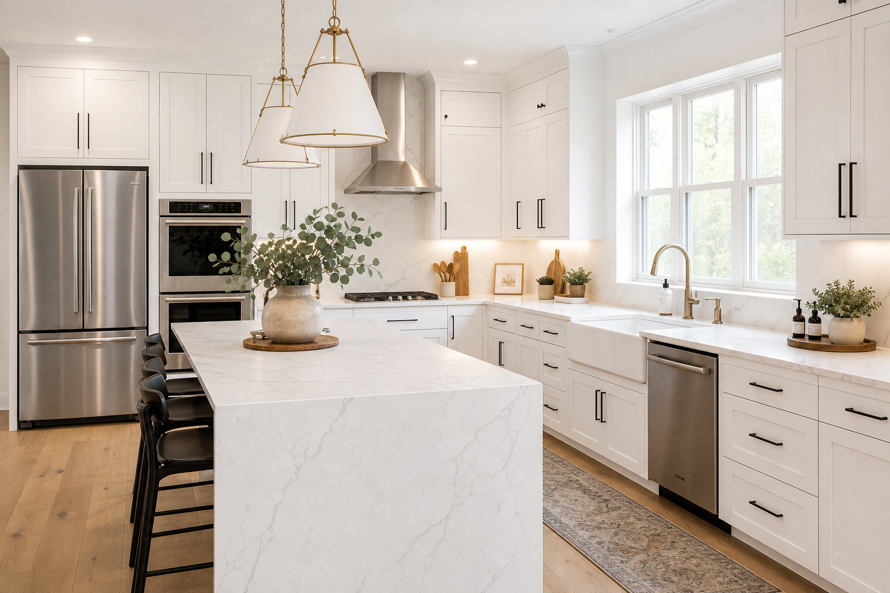

Modern White Kitchen Remodel: Waterfall Island & Classic Contrast
A white kitchen with a waterfall island remains a top remodel goal because it balances timeless cabinetry lines with a sculptural centerpiece. The difference between “pretty” and “durable” is usually in slab planning, hardware discipline, and lighting—not just paint color. Kitchen renovation pros can sequence cabinet install, templating, and appliance trim so the waterfall lands cleanly.
Layout and island sizing
Start with circulation: seating overhang, dishwasher swing, and oven landing space. A waterfall island adds visual weight, so balance it with open floor area and clear paths to the sink and fridge.
Slabs, seams, and waterfall fabrication
Waterfall edges consume more material and expose corners to bumps. Discuss veining direction, bookmatching goals, and whether a quartz with consistent pattern will look better at vertical returns than a busy marble look with the same kitchen remodeling contractor who orders the slab.
Black hardware and fixtures
Matte black pulls create crisp contrast on white doors. Keep pull sizes proportional—oversized bars can look trendy fast, while understated lengths tend to age gracefully.
Appliance integration
Panel-ready dishwashers and built-in ovens keep sightlines calm. If you love a statement range, plan the hood, makeup air, and clearances early so the backsplash composition still feels intentional.
FAQ
Is a waterfall island worth the slab cost?
If you want a focal point and protected corners, often yes—just budget for fabrication and potential slab waste.
What sink works best in a bright white kitchen?
Farmhouse sinks are a natural fit with shaker lines; verify support, faucet height, and how the apron intersects cabinets.